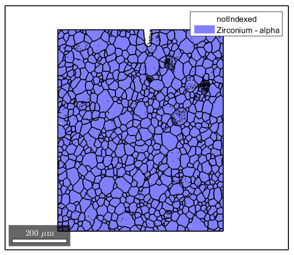
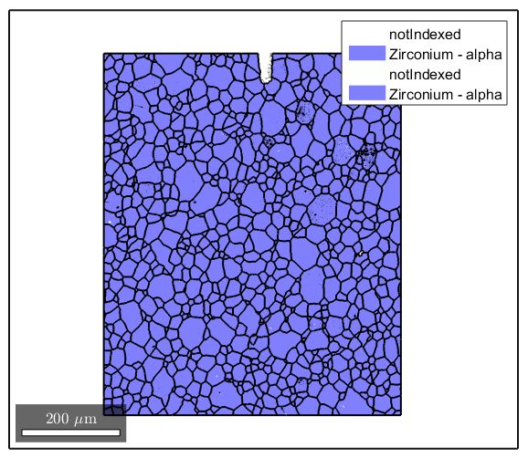

Tutorial script for using the GND Code by Skippon
This script was made to show a simplified/straightforward approach to using the GND script written by Travis Skippon for the Queen's University Nuclear Materials Research Group. The code can be downloaded from https://github.com/tskippon/GND
Contents
Specify Crystal and Specimen Symmetries
Define the symmetries and load the data. You can use the MTEX data import functionality to read in the EBSD data if you find that more straightforward. If you use the 'save to m-file' option in the data_import dialog, it will produce some code that looks like the first section here.
% crystal symmetry CS = {... 'notIndexed',... crystalSymmetry('6/mmm', [3.232 3.232 5.148], 'X||a*', 'Y||b', 'Z||c', 'mineral', 'Zirconium - alpha', 'color', 'light blue'),... crystalSymmetry('m-3m', [3.62 3.62 3.62], 'mineral', 'Zirconium beta', 'color', 'light green'),... crystalSymmetry('m-3m', [4.51 4.51 4.51], 'mineral', 'ZrH-delta', 'color', 'light red'),... crystalSymmetry('4/m', [4.596 4.51 4.51], 'mineral', 'ZrH-gamma-2', 'color', 'cyan')}; % plotting convention setMTEXpref('xAxisDirection','west'); setMTEXpref('zAxisDirection','outOfPlane'); % path to files % pname = '/home/chris/Zhouyao/'; % which files to be imported fname = ['EBSDofN2Sample-Step1-bigMap.ctf']; % create an EBSD variable containing the data ebsd = loadEBSD(fname,CS,'interface','ctf',... 'convertEuler2SpatialReferenceFrame');
Produce the grain map
This will clean up the input data (removing all non-Zr Alpha data points) and then determine the grain structure. Grain boundaries are defined here as regions where the misorientation is greater than 5 degrees.
ebsd(ebsd.phase>1) = []; [grains,ebsd.grainId,ebsd.mis2mean] = calcGrains(ebsd,'angle',5*degree); plot(ebsd) hold on plot(grains.boundary,'linewidth',1.5)
Clean up the grain map
Depending on how well the indexing goes during the scan, there may be some small areas of unindexed or incorrectly indexed pixels. We want to remove those areas because they do not represent the actual microstructure. Here we remove any grains with a grainSize less than 3.
ebsd(grains(grains.grainSize<3))=[]; [grains,ebsd.grainId,ebsd.mis2mean] = calcGrains(ebsd,'angle',5*degree); plot(ebsd) hold on plot(grains.boundary,'linewidth',1.5)
Smooth the EBSD data to reduce some of the measurement noise.
We want to smooth the data slightly so that the GND calculation is not affected by measurement noise.
ebsd=smooth(ebsd,infimalConvolutionFilter);
Run the GND energy minimization code and produce the GND structure
[disArray systems]=GND_auto(ebsd,4,[0.34]); GND=sum_dislocations(disArray,systems,ebsd);
Starting parallel pool (parpool) using the 'local' profile ... connected to 4 workers. Calculating Curvatures... Curvature calculations complete! Minimizing dislocation energy... Estimated time to completion: 00:05:46. Minimization complete! Actual time taken was 01:40:53. Estimate was off by -1647.6%
Save the results and output a summary
It's a good idea to save your matlab state at this stage. The GND code takes a long time to run, so you don't want the results to all disappear if MATLAB crashes or your computer decides it needs to restart to install updates.
save('Step1.mat'); % Having a quick summary of the results is good for identifying what your % next steps should be. This loops through the GND structure and outputs % the name and total average density of each slip system. We use the % geometric mean (geomean) because dislocation density is log-normally % distributed. fprintf(' --- Summary of GND Results --- \n'); for i = 1:length(GND) fprintf('%10s - %15s: %f\n',ebsd(ebsd.phase==GND(i).phase).mineral,GND(i).name,geomean(GND(i).data(GND(i).data>0))); end
--- Summary of GND Results --- Zirconium - alpha - Prism<a>: 0.419954 Zirconium - alpha - screw<a>: 1.661605 Zirconium - alpha - basal<a>: 0.481719 Zirconium - alpha - Pyramidal<c+a>: 2.163750 Zirconium - alpha - Pyramidal2<c+a>: NaN Zirconium - alpha - screw<c+a>: 0.510771 Zirconium - alpha - total: 3.579552